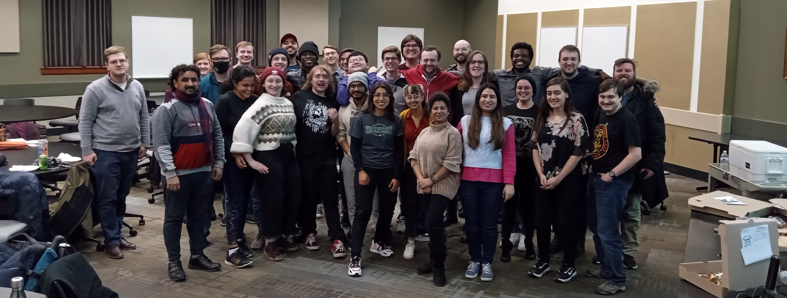

Who we are:
PandA GradS is the official student organization of Ohio University Physics and Astronomy Graduate Students. Join us today on Bobcat Connect, and contact us to get added to the Discord server and stay connected!
What we do:
The PandA GradS meet biweekly immediately following the Physics Department colloquium. Meetings include free pizza, updates on department events and opportunities, and often a guest speaker or activity. PandA GradS has hosted movie nights, game tournaments, and student research keynotes. These meetings also serve as a place for students from different backgrounds, research fields, and experience levels to mingle and share ideas.
Purpose:
PandA GradS exists to
- Provide a supportive community for graduate students
- Promote department "coherence" and a positive environment
- Support students with access to helpful resources for their graduate work and life
- Host events of interest to the student body
- Promote the work of graduate students
- Give the student body an official "voice" to the department and the University